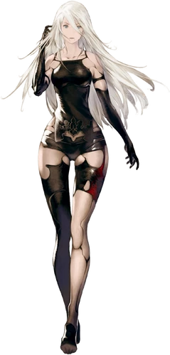

NieR:Automata
is a roleplaying game which is set during a
proxy war between alien-created Machines and human-crafted
androids called YoRHa, focusing on the actions of combat android 2B,
scanner android 9S, and rogue prototype A2.
Main Characters

YoRHa No.2 Type B, or just 2B, is one of the protagonists of
NieR:Automata. She is a YoRHa android created to battle the
machine lifeforms that have invaded the planet on behalf of
the surviving humans. She served during the 14th Machine War.
2B is an all-purpose battle android, deployed as a member of
the automated YoRHa infantry. She is equipped with a multitude
of weapons for close quarters combat and can attack from range
using the Pod support system.

YoRHa No.9 Type S, or just 9S, is one of the protagonists of
NieR:Automata. He is the main character of Branches B and D,
as well as one of the main antagonists and final boss of Branch C.
9S is a Scanner type Android who served during the 14th Machine
War. He has an attack function but is an android that specializes
in investigative purposes—a member of the automated infantry squad,
YoRHa, who triumphs in hacking-based information collection.

YoRHa Type A No.2, or just A2, is one of the protagonists of
NieR:Automata, as well as the final boss in Branch D. She is also
a major character in the YoRHa stage play. She is a prototype of the
YoRHa android line, and combat data from her and her comrades were
used to create the superior current lines, including YoRHa No.2
Type B and YoRHa No.9 Type S. She doesn't like to speak and often
keeps to herself.